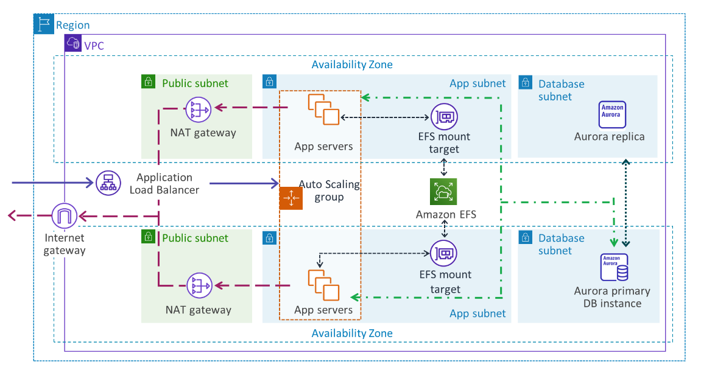
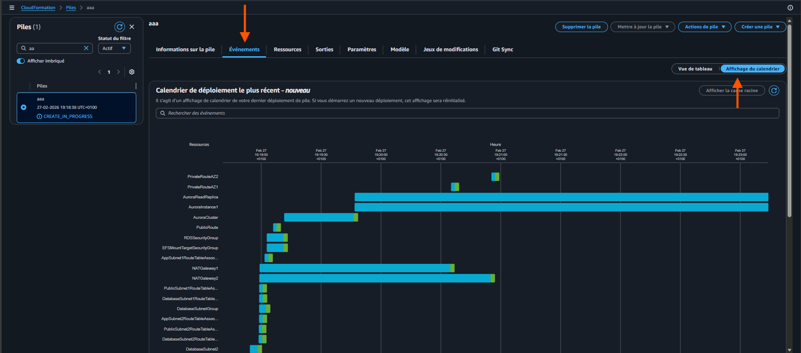

Build a Highly Available WordPress on AWSArchitecting on AWS · Lab Guide v3.1 (FR)
0/5 tâches
Architecting on AWS · Lab Guide v3.1
Build a Highly Available WordPress on AWS
Déployez une infrastructure WordPress répartie sur plusieurs Availability Zones,
alimentée par Amazon Aurora, Amazon EFS,
un Application Load Balancer et un Auto Scaling Group.
Cette version "fast" va à l'essentiel — déroulez les sections détaillées si vous bloquez.
⏱ Durée estimée : 90 min🎯 Niveau : Solutions Architect Associate🇫🇷 Langue : Français🧰 5 tâches · 1 architecture HA
Mise en situation
Scénario de l'atelier
Le contexte client. Comprendre pourquoi on déploie cette architecture, avant le comment.
BlueHaven Media, une jeune entreprise dynamique spécialisée dans la création
de contenus numériques pour artistes indépendants, connaît une croissance fulgurante.
Leur site web WordPress est au cœur de leur activité : portfolio, blog, et
surtout un espace client permettant aux artistes de gérer leur profil, publier leurs œuvres et
suivre leurs statistiques de visibilité.
Jusqu'à récemment, l'ensemble de leur infrastructure web reposait sur un serveur unique hébergé
dans un petit datacenter local. Mais avec l'augmentation du trafic, les temps de chargement se sont allongés
et les pannes sont devenues plus fréquentes. L'équipe technique a donc décidé de franchir un cap :
migrer leur plateforme vers AWS pour tirer parti de la scalabilité et de la résilience du cloud.
L'objectif est clair : déployer une architecture WordPress hautement disponible,
répartie sur plusieurs Availability Zones, garantissant sécurité,
performance et tolérance aux pannes.
En tant que consultant onepoint (future SAA) mandaté pour ce projet, votre mission est de concevoir
et déployer cette nouvelle infrastructure :
Hautement disponible pour éliminer les single points of failure
Élastique pour s'adapter à la charge
Sécurisée au niveau réseau et applicatif
Optimisée en coûts grâce aux services managés AWS
Ce que vous allez apprendre
Objectifs pédagogiques
À l'issue de cet atelier, vous saurez orchestrer cinq services AWS pour servir une application web stateful.
✓Déployer un VPC sur plusieurs Availability Zones à l'aide d'un template CloudFormation
✓Déployer une base de données relationnelle hautement disponible avec Amazon RDS (Aurora)
✓Utiliser Amazon EFS pour fournir une couche de shared storage multi-AZ via NFS
✓Déployer un Application Load Balancer comme point d'entrée de l'application
✓Créer un Auto Scaling Group qui s'adapte automatiquement aux variations de charge
Vue d'ensemble
Architecture cible
L'image ci-dessous montre l'architecture finale que vous allez construire au fil des cinq tâches.

Architecture highly available — VPC multi-AZ avec ALB, Auto Scaling Group, EFS et Aurora.
Préparation
Avant de commencer
Quelques vérifications rapides pour que tout se passe bien.
i
Trigramme : chaque ressource est préfixée par votre ${TRIGRAMME} (3 lettres). Vous l'utiliserez à chaque tâche pour identifier vos ressources dans la console AWS.
Région AWS : placez-vous dans une seule région pour tout l'atelier (par exemple eu-west-3 ou eu-central-1).
Mode "fast" vs "détaillé" : chaque tâche présente d'abord la version essentielle. Cliquez sur « Afficher les instructions détaillées » pour la version pas-à-pas avec captures.
★
Astuce progression : chaque tâche dispose d'un bouton « Marquer comme terminée ». Votre progression est sauvegardée localement (LocalStorage) — vous pouvez revenir plus tard sans la perdre.
1
Tâche 1
Examen et exécution d'un template CloudFormation préconfiguré
Dans cette tâche, vous déployez les ressources réseau et base de données nécessaires
au bon fonctionnement de l'application : VPC multi-AZ, sous-réseaux, NAT gateways,
Internet Gateway, Security Groups et un cluster Aurora.
BlueHaven Media souhaite déployer une nouvelle application WordPress.
Votre cloud engineer a préparé un template CloudFormation qui crée :
1× VPC · 2× public subnets · 2× app subnets privés ·
2× DB subnets privés · 1× Internet Gateway · 2× NAT Gateways (avec Elastic IPs) ·
Security Groups et Outputs nécessaires aux déploiements suivants.
Sous-tâches
Téléchargez puis examinez le template
Task1LabArchiAsso.yaml
pour comprendre l'infrastructure déployée.
Créez la stackCloudFormation en uploadant ce fichier, avec :
Nom de la pile = ${TRIGRAMME}-LabVPCStack
La création peut prendre une dizaine de minutes. Surveillez l'onglet Events
ainsi que le service Aurora and RDS en parallèle.
Affichez les ressources créées depuis la console.
Notez bien les Outputs de la stack : certaines valeurs seront utilisées plus tard.
!
Patience : le déploiement peut atteindre 15 minutes. Profitez-en pour relire le YAML pendant la création.
★Félicitations ! Vous avez créé toutes les ressources réseau et base de données via CloudFormation.
Tâche 1.1 — Accès à la console CloudFormation
En haut de la Console de gestion AWS, dans la zone de recherche, recherchez et sélectionnez CloudFormation.
Ouvrez le fichier dans un éditeur de texte (pas dans un traitement de texte).
Examinez le template CloudFormation.
Effectuez une prédiction sur les ressources créées par ce modèle.
Tâche 1.3 — Création de la stack CloudFormation
Sélectionnez Créer une pile > Avec de nouvelles ressources (standard).
Configurez :
Sélectionnez Charger un fichier de modèle
Sélectionnez Choisir un fichier
Sélectionnez le fichier YAML sur votre machine
Sélectionnez Suivant
Pour Nom de la pile, saisissez ${TRIGRAMME}-LabVPCStack.
Dans la section Paramètres : remplacez x par votre propre trigramme.
Sélectionnez Suivant. La page Configure stack options s'affiche — conservez les valeurs par défaut, puis Suivant.
En bas de la page Review, sélectionnez Soumettre. La pile passe à l'état CREATE_IN_PROGRESS.
Cliquez sur l'onglet Informations sur la pile.
Allez sur Évènements > Affichage du calendrier pour visualiser la timeline du déploiement.

Affichage du calendrier des évènements CloudFormation pendant le déploiement.
Attendez que le statut passe à CREATE_COMPLETE.
i
Remarque : le déploiement peut prendre jusqu'à 15 minutes.
Tâche 1.4 — Affichage des ressources créées
Sélectionnez l'onglet Ressources. La liste affiche les ressources qui sont en cours de création. CloudFormation détermine l'ordre optimal — par exemple le VPC avant ses sous-réseaux.
Examinez les ressources qui ont été déployées dans la pile.
Cliquez sur l'onglet Événements et faites défiler la liste. La liste affiche (dans l'ordre inverse) les activités effectuées par CloudFormation. Toutes les erreurs rencontrées y sont répertoriées.
Cliquez sur l'onglet Sorties (Outputs).
Examinez les paires clé-valeur dans la section Outputs. Ces valeurs seront utiles dans les prochaines tâches.
2
Tâche 2
Création d'un système de fichiers Amazon EFS
Vous créez et configurez un système de fichiersAmazon EFSregional. Il fournira une couche de stockage partagée entre toutes les instances
EC2 de l'Auto Scaling Group, sur les deux Availability Zones.
BlueHaven Media a besoin d'une solution de stockage cloud-native,
conforme à ses politiques de sauvegarde et de chiffrement, sans avoir à provisionner ni gérer de matériel.
Vous recommandez Amazon EFS : elastic, set-and-forget,
simple et serverless.
Sous-tâches
Créez un système de fichiers EFS régional.
Copiez l'ID du système de fichiers (utilisé plus tard).
!
Sécurité réseau : les mount targets doivent être placés dans les app subnets privés (pas dans les sous-réseaux DB ni publics) avec le Security GroupEFSMountTargetSecurityGroup.
★Félicitations ! Vous avez créé le système de fichiers Amazon EFS.
Tâche 2.1 — Accès à la console Amazon EFS
En haut de la Console de gestion AWS, recherchez et sélectionnez EFS. La page Amazon Elastic File System console s'affiche.
Tâche 2.2 — Création d'un nouveau système de fichiers
Sélectionnez Créer un système de fichiers.
Sélectionnez Personnaliser. La page Paramètres du système de fichiers s'affiche.
Dans la section Général, configurez :
Name — saisissez ${TRIGRAMME}-EFS
DésélectionnezActiver les sauvegardes automatiques
DésélectionnezActiver le chiffrement des données au repos
Conservez les valeurs par défaut pour les autres paramètres.
Sélectionnez Suivant. La page Accès réseau s'affiche.
Dans Virtual Private Cloud (VPC), sélectionnez votre VPC créé en Tâche 1 : ${TRIGRAMME}-LabVPC.
Pour Cibles de montage, configurez :
Zone de disponibilité : sélectionnez celle se terminant par « a »
ID du sous-réseau : ${TRIGRAMME}-AppSubnet-1
Groupes de sécurité : ${TRIGRAMME}-EFSMountTargetSecurityGroup
Supprimez le Security Group par défaut en cliquant sur le X.
Pour l'autre cible de montage :
Zone de disponibilité : celle se terminant par « b »
ID du sous-réseau : ${TRIGRAMME}-AppSubnet-2
Groupes de sécurité : ${TRIGRAMME}-EFSMountTargetSecurityGroup
Supprimez à nouveau le Security Group par défaut.
Sélectionnez Suivant. La page File system policy – optional s'affiche.
i
Remarque : la configuration de cette page n'est pas nécessaire dans cet atelier.
Sélectionnez Suivant, puis tout en bas, choisissez Créer.
✓
Succès ! Le message « Le système de fichiers (fs-xxxxxxx) est disponible » s'affiche en haut de l'écran. L'état passera à Disponible après quelques minutes.
Tâche 2.3 — Copie des métadonnées Amazon EFS
Dans le volet de navigation de gauche, sélectionnez Systèmes de fichiers.
Copiez l'ID du système de fichiers ${TRIGRAMME}-EFS dans un éditeur de texte. Format attendu : fs-096b5fda40acbbc96.
3
Tâche 3
Création d'un Application Load Balancer
Vous créez l'Application Load Balancer (couche 7) et le Target Group qui
recevra les instances EC2 servant WordPress.
L'application actuelle de BlueHaven Media connaît des pannes liées à des charges
inattendues. Un Application Load Balancer (Layer 7) résoudra cela en répartissant
le trafic sur les serveurs d'application des sous-réseaux privés. Vous le déployez avec une health check
ciblée et l'enregistrement des cibles requises.
Sous-tâches
Créez le Target Group avec health check path = /wp-login.php.
Créez l'Application Load Balancer.
Copiez le DNS name de l'ALB (utilisé plus tard).
★
Astuce health check :/wp-login.php répond 200 OK sans authentification — c'est un excellent endpoint pour vérifier qu'Apache + PHP + WordPress tournent réellement.
★Félicitations ! Vous avez créé le Target Group et l'Application Load Balancer.
Tâche 3.1 — Accès à la console Amazon EC2
En haut de la Console de gestion AWS, recherchez et sélectionnez EC2.
Tâche 3.2 — Création d'un Target Group
Dans le volet de navigation gauche, section Équilibrage de charge, sélectionnez Groupes cibles.
Sélectionnez Créer un groupe cible.
Dans Configuration de base :
Choisir un type de cible : Instances
Nom du groupe cible : ${TRIGRAMME}-myWPTargetGroup
VPC : ${TRIGRAMME}-LabVPC
Dans Vérifications de l'état :
Chemin de vérification : /wp-login.php
Développez ▶ Paramètres avancés de vérification et conservez les valeurs par défaut pour les autres paramètres.
Sélectionnez Suivant. La page Enregistrer les cibles s'affiche — il n'y a aucune cible à enregistrer pour l'instant.
Tout en bas, choisissez Suivant puis Créer un groupe cible.
✓
Le message « Groupe cible ${TRIGRAMME}-myWPTargetGroup créé avec succès » s'affiche.
Tâche 3.3 — Création de l'Application Load Balancer
Dans le volet de navigation gauche, cliquez sur Équilibreurs de charge.
Sélectionnez Créer un équilibreur de charge.
Dans Types d'équilibreurs de charge, sous Application Load Balancer, choisissez Créer.
Dans Configuration de base :
Nom de l'équilibreur de charge : ${TRIGRAMME}-myWPAppALB
Vous utilisez un second template CloudFormation pour déployer le user dataWordPress dans un Launch TemplateEC2.
Le template inclut le montage EFS et la configuration Aurora.
À ce stade, vous avez créé les ressources réseau, la base de données, Amazon EFS,
et un Application Load Balancer. Il est temps de tout assembler.
Examinez le template, créez la stack, vérifiez les erreurs et corrigez-les si nécessaire.
Créez la stack CloudFormation en renseignant les bons paramètres.
Affichez les ressources créées depuis la console.
Paramètres à renseigner
Trigramme
Votre ${TRIGRAMME} à 3 lettres (utilisé pour préfixer toutes les ressources créées).
EFS File System ID
L'ID récupéré en Tâche 2 — format fs-096b5fda40acbbc96.
DatabaseHostName
Cluster endpointAurora issu des Outputs de la stack Tâche 1.
DatabaseUserName / Password
admin / LabPassword123! (paramètres de la stack Tâche 1).
ALB DNS Name
DNS de l'ALB récupéré en Tâche 3.
!
Attention au user data : accordez-y une attention particulière. C'est ce script qui installe Apache, PHP, monte EFS et configure WordPress contre Aurora. En cas d'échec, consultez /var/log/wordpress-install.log sur l'instance.
★Félicitations ! Vous avez créé la pile à l'aide du template CloudFormation fourni.
Tâche 4.1 — Accès à la console CloudFormation
En haut de la Console de gestion AWS, recherchez et sélectionnez CloudFormation.
Ouvrez le fichier dans un éditeur de texte (pas dans un traitement de texte).
Examinez le template CloudFormation.
Effectuez une prédiction sur les ressources créées.
Tâche 4.3 — Création de la stack CloudFormation
Sélectionnez Créer une pile > Avec de nouvelles ressources (standard).
Configurez :
Sélectionnez Charger un fichier de modèle
Sélectionnez Choisir un fichier
Sélectionnez le fichier YAML sur votre machine
Sélectionnez Suivant
Définissez le Nom de la pile sur ${TRIGRAMME}-WPLaunchConfigStack.
Configurez les paramètres demandés (cf. tableau ci-dessus).
Sélectionnez Suivant. La page Configure stack options s'affiche — conservez les valeurs par défaut.
Sélectionnez Suivant. La page Review WPLaunchConfigStack s'affiche.
Tout en bas, sélectionnez Soumettre. La pile passe à CREATE_IN_PROGRESS.
Cliquez sur l'onglet Informations sur la pile.
Cliquez éventuellement sur le bouton d'actualisation.
Attendez CREATE_COMPLETE.
i
Remarque : le déploiement peut prendre quelques minutes.
Tâche 4.4 — Affichage des ressources créées
Sélectionnez l'onglet Ressources. La liste affiche les ressources créées (notamment le Launch Template).
5
Tâche 5
Création d'un Auto Scaling Group et test de l'application
Dernière étape : créer les serveurs d'applicationWordPress
au moyen d'un Auto Scaling Group et d'une scaling policy. Vous validez ensuite
la santé des cibles, puis vous connectez à l'application via le Load Balancer.
Le Launch Template est en place. Créez maintenant un Auto Scaling Group
et la scaling policy associée. Vérifiez la santé des instances et testez la disponibilité du
Load Balancer. Une fois l'équipe satisfaite, migrez le site WordPress
vers l'environnement AWS et testez le fonctionnement.
Sous-tâches
Créez un Auto Scaling Group.
Vérifiez les Target Groups et testez le serveur d'application via l'ALB.
Connectez-vous à WordPress et explorez.
Capacités à configurer
Capacité souhaitée
2
Capacité minimale
2
Capacité maximale
3
★
Astuce d'identification : ajoutez la balise Name = ${TRIGRAMME}-wp-app sur l'ASG. Très important pour repérer vos EC2 dans la console plus tard.
!
Accédez en http (et non https) — l'ALB de cet atelier n'expose pas de listener TLS.
★Félicitations ! Vous avez créé l'Auto Scaling Group et lancé avec succès l'application WordPress.
Tâche 5.1 — Création d'un Auto Scaling Group
En haut de la Console de gestion AWS, recherchez et sélectionnez EC2.
Dans le volet de navigation gauche, sous Auto Scaling, choisissez Groupes Auto Scaling, puis Créer un groupe Auto Scaling.
Configurez :
Nom : ${TRIGRAMME}-WP-ASG
Modèle de lancement : sélectionnez celui créé en Tâche 4 → ${TRIGRAMME}-LabLaunchTemplate
Sélectionnez Suivant. La page Choisir les options de lancement d'instance s'affiche.
Sélectionnez Attacher à un équilibreur de charge existant
Sélectionnez Choisir parmi les groupes cibles de votre équilibreur de charge
Liste déroulante Groupes cibles existants : ${TRIGRAMME}-myWPTargetGroup | HTTP
Autres types de surveillance : ☑ Activer les surveillances de l'état Elastic Load Balancing
Période de grâce : laissez la valeur par défaut 300 ou plus
Sélectionnez Suivant.
Dans Taille du groupe : Souhaitée = 2, Minimale = 2, Maximale = 3. Conservez les autres valeurs par défaut.
Sélectionnez Suivant.
Sélectionnez à nouveau Suivant. La page Ajouter des identifications s'affiche.
Cliquez sur Ajouter une balise :
Clé : Name
Valeur : ${TRIGRAMME}-wp-app
Très important pour identifier vos EC2 dans la console !
Sélectionnez Suivant.
Vérifiez la précision de la configuration, puis sélectionnez Créer un groupe Auto Scaling.
Choisissez le lien du groupe ${TRIGRAMME}-WP-ASG.
Examinez la section Détails puis cliquez sur Activité. L'Historique d'activités garde une trace des évènements de l'ASG.
Sélectionnez l'onglet Gestion des instances. L'ASG a lancé deux instances EC2, à l'état de cycle de vie En service.
Choisissez l'onglet Surveillance pour voir les métriques CloudWatch de l'ASG.
i
Si les instances ne sont pas encore En service, attendez quelques minutes et actualisez.
Tâche 5.2 — Vérification de l'état de santé des Target Groups
Développez le menu de navigation via l'icône ☰ en haut à gauche.
Dans le panneau gauche, sélectionnez Groupes cibles.
Sélectionnez le lien ${TRIGRAMME}-myWPTargetGroup.
Dans l'onglet Cibles, patientez le temps que l'état des instances passe à Healthy.
!
Remarque : les vérifications peuvent prendre jusqu'à 5 minutes avant d'afficher Healthy. Attendez ce statut avant de continuer. Sinon, revérifiez la configuration du Target Group en Tâche 3.2.
Tâche 5.3 — Connexion à l'application WordPress
Dans le volet de navigation gauche, cliquez sur Équilibreurs de charge.
Copiez le Nom DNS de l'ALB et ajoutez /wp-login.php à la fin pour obtenir l'URL d'admin WordPress.
Sortie attendue : exemple d'URL d'administration WordPress complète :